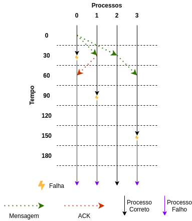

Voltar
Trabalho Prático 3 - Teste 7
Em um sistema com 4 processos, o broadcast é iniciado pelo processo 0 e as falhas sao randômicas.
O programa foi executado com os seguintes parâmetros:
{% highlight bash %}
./bebcast 0 4 R
{% endhighlight %}
A evolução do broadcast ao longo do tempo pode ser visualizado abaixo:

O log deste teste pode ser visualizado abaixo:
› Log do teste 7 (clique para expandir)
{% highlight plaintext %}
A semente da randomizacao: 1399767743
Este programa foi executado para N=4 processos
O tempo maximo de simulacao e de 200
A latencia entre as mensagens e o intervalo de testes e de 30
A origem do broadcast e o processo 0
A ordem das falhas no decorrer da simulacao: 0,3,1
Os estados inicias de cada processo sao:
State do processo 0: [0, 0, 0, 0]
State do processo 1: [0, 0, 0, 0]
State do processo 2: [0, 0, 0, 0]
State do processo 3: [0, 0, 0, 0]
******************************************
==========================================
Executando processo 0 no tempo 0 [BEBCAST]
Iniciando broadcast com origem 0
Mensagem entregue pelo processo 0
Mensagem enviada do processo 0 para o processo 1 com cluster 1
Mensagem enviada do processo 0 para o processo 2 com cluster 2
==========================================
Executando processo 0 no tempo 30 [TEST]
==========================================
Executando processo 1 no tempo 30 [TEST]
==========================================
Executando processo 2 no tempo 30 [TEST]
==========================================
Executando processo 3 no tempo 30 [TEST]
==========================================
Executando processo 0 no tempo 30 [FAULT]
--> Event[1]: Processo 0 falhou no tempo 30.0
==========================================
Executando processo 1 no tempo 30 [RECEIVE_MSG]
Mensagem recebida pelo processo 1 do processo 0 com cluster 1
Mensagem entregue pelo processo 1
O processo 1 nao possui ACKs pendentes
ACK enviado do processo 1 para o processo 0
==========================================
Executando processo 2 no tempo 30 [RECEIVE_MSG]
Mensagem recebida pelo processo 2 do processo 0 com cluster 2
Mensagem entregue pelo processo 2
Mensagem enviada do processo 2 para o processo 3 com cluster 1
==========================================
Executando processo 3 no tempo 60 [FAULT]
--> O evento agendado para 60.0 foi adiado para 90.0 pois o evento anterior nao foi diagnosticado
==========================================
Executando processo 1 no tempo 60 [TEST]
==========================================
Executando processo 2 no tempo 60 [TEST]
==========================================
Executando processo 3 no tempo 60 [TEST]
==========================================
Executando processo 0 no tempo 60 [RECEIVE_ACK]
==========================================
Executando processo 3 no tempo 60 [RECEIVE_MSG]
Mensagem recebida pelo processo 3 do processo 2 com cluster 1
Mensagem entregue pelo processo 3
==========================================
Executando processo 1 no tempo 90 [FAULT]
--> Event[2]: Processo 1 falhou no tempo 90.0
==========================================
Executando processo 3 no tempo 90 [FAULT]
--> O evento agendado para 90.0 foi adiado para 120.0 pois o evento anterior nao foi diagnosticado
==========================================
Executando processo 2 no tempo 90 [TEST]
==========================================
Executando processo 3 no tempo 90 [TEST]
==========================================
Executando processo 3 no tempo 120 [FAULT]
--> O evento agendado para 120.0 foi adiado para 150.0 pois o evento anterior nao foi diagnosticado
==========================================
Executando processo 2 no tempo 120 [TEST]
==========================================
Executando processo 3 no tempo 120 [TEST]
==========================================
Executando processo 3 no tempo 150 [FAULT]
--> Event[3]: Processo 3 falhou no tempo 150.0
==========================================
Executando processo 2 no tempo 150 [TEST]
3 falhou e o processo 2 vai reenviar a mensagem
Nao existem processos corretos no cluster 1 do processo 2
==========================================
Executando processo 2 no tempo 180 [TEST]
******************************************
Simulacao encerrada
==========================================
Eventos durante a simulacao:
Event[1]: FALHA | round 2 | tempo 030.0 | processo 0 | numero de testes de 2 | latencia de 0
Event[2]: FALHA | round 3 | tempo 090.0 | processo 1 | numero de testes de 1 | latencia de 1
Event[3]: FALHA | round 5 | tempo 150.0 | processo 3 | numero de testes de 1 | latencia de 0
==========================================
Programa finalizado com sucesso
Autor: Giovanni Rosa :)
==========================================
{% endhighlight %}